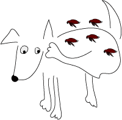

Scabby dogs and cats which spend most of their time scratching are the predominant feature of small animal practice. In many cases, the original cause is flea infestation (or rarely mites) which should be treated aggressively, including contact animals and the environment. However, there is a wide variety of diseases which can cause skin problems and which should be diagnosed and treated. Once all of these have been ruled out, there is a large number of dogs and a smaller number of cats which probably have atopic dermatitis. Atopy is the development of an allergy to environmental allergens. If it is possible to avoid these allergens, the problem can also be avoided, but it is usually necessary to give anti-inflammatory / immunosuppressant drugs of some sort. The dog is likely to need treatment for life, so side effects (and cost) of drugs becomes important.
Skin reactions are a common side effect of drugs in people, but are not recognised in animals.
Traditionally, corticosteroids have been the main treatment and many dogs have developed Cushing's syndrome as a result. Oral prednisolone is still the main treatment, but the dose should be reduced as much as possible, often by using adjuvant drugs.
Cyclosporin can be used as a monotherapy with fewer side effects, but is expensive. A veterinary product has recently become available in NZ. Similar drugs, topical tacrolimus and pimecrolimus, are used in people. Oral formulations work better in dogs.
Histamine H1 blockers are useful in about 20% of dogs. A wide variety of drugs with antihistamine effects is available. Hydroxyzine, diphenhydramine, amitriptyline and several of the older phenothiazines such as promethazine and trimeprazine are used. It is difficult to predict which will work, so a two week treatment trial is often used.
Omega 3 fatty acids, either as dietary supplements or prescription diets can reduce pruritus in about 40% of dogs. They take at least three months to work (see anti-arthritis drugs).
Oxpentifylline (pentoxifylline USAN) may have some anti-inflammatory effect on its own, but also seems to potentiate corticosteroids and antihistamines. It has partial efficacy at best, but is reasonably safe (most likely side effect is vomiting).
Washing at least weekly helps to keep allergen concentration on the skin down. Shampoos containing emollients may help to prolong the effect. Remember that washing will remove any residual flea treatments.
If the allergen has been specifically identified, hyposensitisation using the allergen as a "vaccine" may work. It can take up to six months to have an effect.